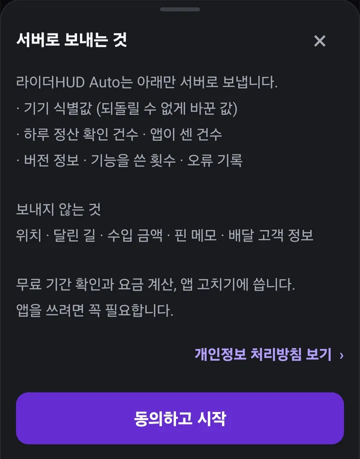
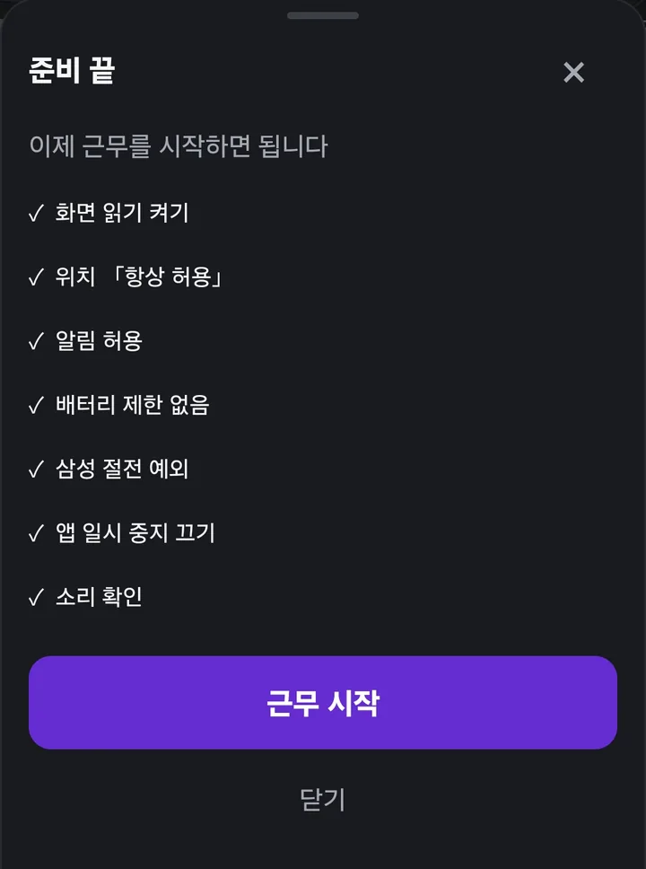
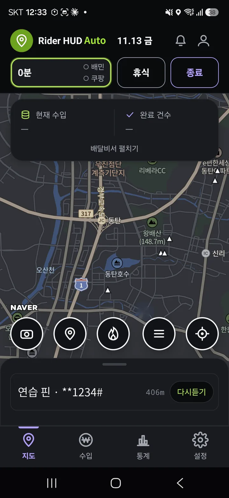
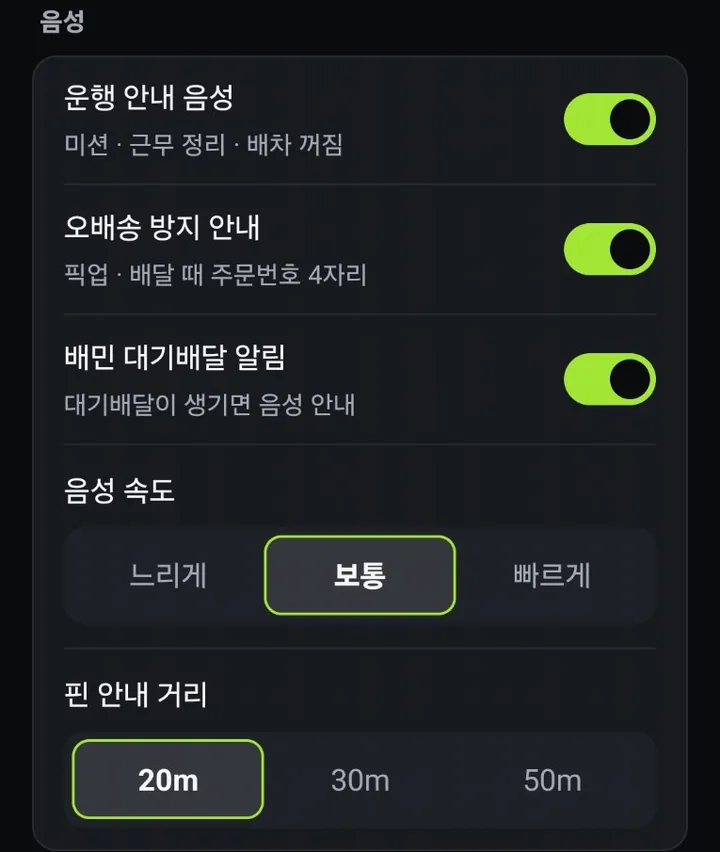
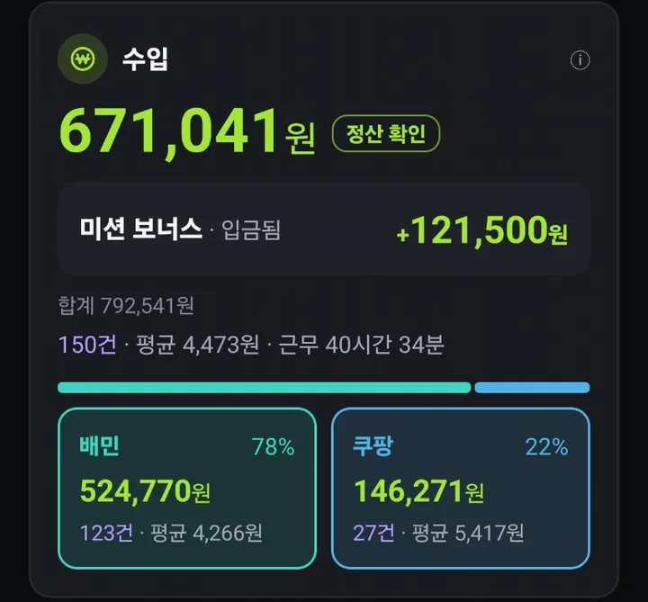
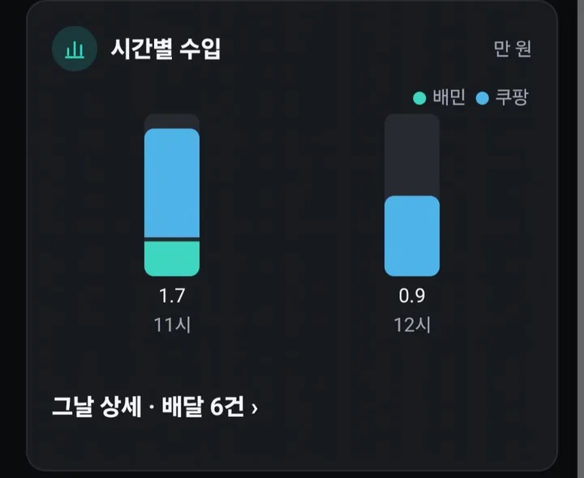
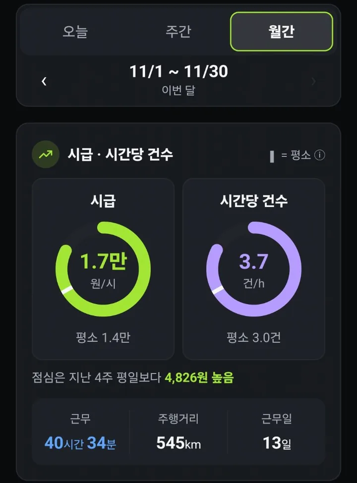
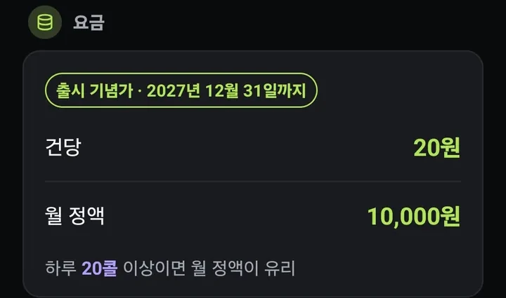

라이더HUD Auto
사용법
앱 화면의 ⓘ를 누르면 이 페이지의 그 부분으로 바로 옵니다. 설치는 설치 안내를 먼저 보세요.
처음 켜기 · 근무 시작
처음 한 번 — 권한
앱을 처음 열면 필요한 권한을 하나씩 안내해요. 순서대로 허용하면 됩니다.
- 화면 읽기 — 배민 · 쿠팡 앱 화면의 글자를 읽어요. 이게 꺼져 있으면 콜 시급 · 자동 기록이 안 돼요.
- 위치 「항상 허용」 — 화면이 꺼져도 핀 · 카메라 음성이 나오게.
- 알림 — 근무 중 표시 · 근무 시작 묻기.
- 배터리 「제한 없음」 — 폰이 앱을 재우지 않게.
빠뜨린 게 있으면 설정 › 폰 설정 점검에서 한 번에 확인할 수 있어요. 안내를 다시 보려면 설정 › 처음 안내 다시 보기.


근무 시작 · 휴식 · 마치기
- 배달 앱을 켜면 「오늘 근무를 시작할까요?」라고 물어요. [근무 시작] 한 번이면 끝.
- 쉬는 동안은 휴식. 휴식 시간은 시급 계산에서 빠져요.
- 끝나면 근무 마치기. 잘못 눌렀으면 「근무 종료 되돌리기」로 되돌려요.
- 근무 중 앱이 꺼졌거나 GPS가 꺼진 시간은 근무시간에 넣지 않아요. 넣고 싶은 구간은 설정 › 제외한 근무 구간에서 「근무에 넣기」.
하루는 새벽 6시에 바뀌어요. 새벽 2시에 끝난 근무는 전날 근무로 셉니다.


콜 카드 읽는 법
배민 · 쿠팡이츠 콜이 뜨면 배달 앱 위에 작은 카드가 뜨고, 같은 내용을 소리로 알려 줘요.
- 시급 — 이 콜 하나를 시간당 수입으로 바꾼 값이에요. 금액 ÷ 예상 시간.
- 계산 N분 — 예상 시간. 거리에 따라 늘어나고, 묶음은 건마다 조금씩 더해요. 실제로 걸린 시간과 크게 다르지 않게 맞춰 두었어요.
- 거리 — 배달 앱에 나온 거리 그대로.
- 기록이 쌓이면 「이 시간대 평균」 같은 비교 줄이 함께 나와요. 좋다 · 나쁘다는 앱이 정하지 않아요. 받을지는 라이더가 정해요.
- 플러스 콜(쿠팡이츠 플러스 등) — 배달료가 콜에 안 나와서 시급 대신 거리 · 계산 분만 보여 줘요.
라이더HUD는 콜을 대신 받거나 거절하지 않아요. 화면 글자만 읽습니다.


예시 화면이에요. 고객 주소와 지도는 흐리게 가렸어요. 카드는 콜 제안 화면 위쪽에 떠서 수락 버튼을 가리지 않아요.
배달비서 카드
지도 화면 아래의 카드예요. 접고 펼칠 수 있어요.
- 시간당 건수 · 지금까지 시급 · 달린 거리 — 오늘 근무 기준.
- 콜 대기 N분 — 마지막 배달을 마친 뒤 다음 콜까지 기다린 시간. 오래 걸리면 자리를 옮길지 판단하는 데 써요.
- 오늘 목표 — 목표 금액을 정해 두면 지금 속도로 몇 시쯤 채우는지 막대로 보여 줘요. 목표 칸을 눌러 직접 넣어요.
- 최근 콜 — 오늘 뜬 콜 목록. 받은 콜은 굵게 표시해요.
픽업 지도
지도 아래 🔥 단추를 누르면 지난 6주 동안 픽업한 매장이 숫자로 모여 보여요. 요일 · 시간대를 고르면 그때 픽업이 많았던 곳만 남아요. 콜이 뜸할 때 어디서 기다릴지 고르는 데 써요.

핀 메모 · 후면 단속카메라
- 지도 아래 단추 줄 — 왼쪽부터 후면카메라 저장 · 지금 자리에 핀 저장(공동현관 · 출입 메모) · 🔥 픽업 지도 · 핀 목록 · 내 위치.
- 저장한 자리에 가까워지면 메모를 소리로 읽어 줘요. 「우리 집, 1234#」처럼 이름과 비밀번호 사이는 앱이 알아서 쉬어 읽어요.
- 후면카메라는 지나간 방향까지 함께 저장돼서 더 정확하게 알려 줘요.
- 핀 목록(☰) — 저장한 핀을 모아 봐요. 목록에서 이름 고치기 · 지도에서 보기 · 지우기를 할 수 있어요.
- 핀 목록을 열 때는 폰 잠금(지문 · 비밀번호)으로 한 번 확인해요. 남이 내 폰을 봐도 비밀번호 메모를 못 보게.

사진은 연습용 핀이에요. 진짜 공동현관 비밀번호가 보이는 화면은 남에게 보내지 마세요.
오배송 방지 · 대기배달 알림
- 배달 사진을 찍을 때 주문번호 끝 4자리를 한 자리씩 읽어 주고 「주소 확인」을 알려 줘요.
- 배민에 수락할 대기배달이 생기면 「똑똑」 소리와 함께 건수를 알려 줘요.
- 고객 주소 · 연락처 · 요청사항은 적지도, 밖으로 보내지도 않아요.

수입과 정산 확인
수입 탭은 돈만 보여 줘요. 위에서 오늘 · 주간 · 월간을 고르고, 기간 줄로 앞뒤로 넘겨요.
수입 카드
- 큰 숫자는 그 기간의 배달 수입. 아래에 배민 · 쿠팡을 따로, 금액 · 건수 · 건당 평균으로.
- 미션 보너스는 배달 수입과 따로 한 줄로 보여 주고(입금됨 · 입금 전), 맨 아래 합계에 더해요.
- 「정산 확인 전」 — 앱이 콜을 보고 센 금액이에요. 배민 정산 화면이나 쿠팡 내 수입 화면을 한 번 열면, 앱이 그 금액을 읽어 플랫폼 숫자로 바꿔요. 앱 기록과 정산이 다르면 언제나 정산 쪽을 따라요.
- 쿠팡은 「N:NN 기준」이 붙어요. 쿠팡 내 수입 화면을 연 시각이고, 그 뒤에 탄 건은 아직 안 들어가 있다는 뜻이에요.

시간별 수입
[오늘]에서 시간마다 번 돈을 막대로 보여 줘요. 배민 · 쿠팡이 한 막대에 색으로 쌓여요.

입금
- 쿠팡은 금요일에 한 주 몫(수~화)이, 배민은 3영업일 뒤 매일 들어와요. 공휴일이 끼면 밀려요.
- 입금 예정일이 지나면 입금됨, 전이면 입금 전. 쿠팡 플러스는 따로 한 칸.
그날 상세 · 공유 카드
- 요일 막대나 달력의 날짜를 누르면 그날 배달이 한 줄씩 나와요 — 시각 · 매장 · 거리 · 금액.
- 묶음은 「묶음 2건 ▾」으로 모아 보여 줘요. 플러스 콜에는 「플러스」 꼬리표.
- 쿠팡 건을 누르면 「6,535원 = 기본 2,575 + 할증 3,960」처럼 할증 내역이 보여요(완료 화면을 읽은 건만).
- 공유 카드 — 그날 수입 · 미션 · 달린 길을 그림 한 장으로. 고객 정보는 들어가지 않아요.

통계 보는 법
통계 탭은 「언제 · 어떤 거리에서 잘 벌었나」를 보여 줘요. 비교는 대부분 지난 4주 기록으로 하고, 기록이 적으면 숫자 대신 안내만 나와요.
시급 · 시간당 건수
근무한 시간(휴식 제외)으로 나눈 실제 시급과, 한 시간에 몇 건 탔는지. ▮ 표시는 평소(지난 기간 평균) 자리예요.

시간대 시급
아침 · 점심 · 오후 · 저녁 · 밤으로 나눠 언제 시급이 높았는지. 가장 높은 칸은 라임색이에요.
점심 · 오후 경계는 평일과 주말이 달라요(쿠팡 기준).

거리별 시급 비교
1km 이하 · 1~3km · 3~5km · 5km 이상으로 나눠, 어느 거리 콜이 시간당 더 벌었는지.
단건 vs 묶음
한 건씩 탄 것과 묶음으로 탄 것의 시급을 나란히. 묶음이 정말 나은지 내 기록으로 봐요.

요일 · 시간대 시급 비교
요일 × 시간대 표. 언제 나가면 좋은지 고를 때 써요.

콜 대기 시간
배달을 마치고 다음 콜까지 기다린 시간을 모아 보여 줘요. 근무를 마친 뒤 · 앱이 꺼진 구간은 빼요.
통계 탭 아래 「더 보기」에 콜 대기 · 기록 상태 · 포인트 · 정비 · 배달 보험이 있어요.

포인트 · 기간 누적
배민은 화면에 나온 기간(예: 11/2 ~ 11/15)의 누적, 쿠팡은 최근 2주. 플랫폼 화면 값을 못 읽은 날은 「(앱 기록)」으로 표시해요.

정비
- 오일 · 타이어 같은 항목에 교환 주기(km)를 넣어 두면, 앱이 잰 달린 거리로 「교환까지 N km」를 세요.
- 때가 되면 알림이 와요. 갈았으면 교환했어요를 눌러 다시 셉니다.
- 항목은 「+ 항목 추가」로 늘려요. 항목을 누르면 주기 지우기 · 항목 삭제도 할 수 있어요.

배달 보험
- 배달한 시간 = 콜 수락부터 배달 완료까지 합친 시간. 묶음으로 겹친 시간은 한 번만 세요. 콜 기다린 시간은 빠져요.
- 시간제 보험이라면 얼마쯤 나올지 배달한 시간 × 시간당 요율로 보여 줘요. 월 보험료와 견줘 보는 데 써요.
- 앱은 보험을 권하거나 팔지 않아요. 요율은 보험사마다 달라요.

백업 · 폰 바꿀 때
- 설정 › 전체 백업 내보내기 — 핀 · 수입 · 통계를 파일 하나로. 폰을 바꾸기 전에 꼭 해 두세요.
- 새 폰에서 설정 › 백업 가져오기 · 합치기. 두 폰 기록을 합칠 때도 같은 메뉴예요.
- 백업 파일에는 핀 메모(비밀번호 포함)가 들어 있어요. 남에게 보내지 마세요.
- 운행 기록과 핀은 폰에만 있어서, 앱을 지우면 함께 사라져요. 지우기 전에 꼭 백업을 내보내세요.

웹앱 핀 옮기기
라이더HUD 웹앱에 저장한 장소 핀을 Auto로 옮길 수 있어요.
- 웹앱을 열고 PIN을 넣어 잠금을 풀어요.
- 웹앱 설정 › 엑셀 연계 › Auto 앱으로 핀 옮기기. 핀 파일이 다운로드 폴더에 저장돼요.
- Auto 설정 › 기록 · 백업 › 백업 가져오기 · 합치기에서 그 파일을 골라요. 「핀 N개」가 나오면 끝이에요.
- 같은 파일을 두 번 넣어도 한 번만 들어가요.
- 후면카메라는 옮기지 않아요. Auto에서 지나가며 다시 저장해 주세요(방향까지 저장돼서 더 정확해요).
- 핀 파일에는 공동현관 비밀번호가 들어 있어요. 남에게 보내지 마세요. 옮긴 뒤엔 지워도 돼요.
- 아이폰은 웹앱 설정 › 엑셀로 내보내기의 「장소목록」으로 핀을 받아 둘 수 있어요.
- 웹앱은 Auto 정식 출시 3개월 뒤 종료돼요. 날짜는 정식 출시 때 알려 드려요.
요금 · 무료 기간 · 친구 소개
- 탄 만큼 내는 건당과 월 정액 중에서 골라요. 출시 기념가(2027년 12월 31일까지) — 건당 20원 · 월 정액 10,000원.
- 하루 20콜 이상 타면 월 정액이 유리해요.
- 출시 기념 행사 — 2027년 1월 31일까지 누구나 무료예요.
- 행사가 끝나도 설치 후 첫 달은 무료예요. 1월 31일 전에 설치했다면 2월 28일까지, 그 뒤에 설치하면 처음 쓴 날부터 한 달(28일)이에요.
- 무료 기간 중에는 돈이 나가지 않아요. 무료가 끝나는 날은 앱 마이페이지(위 👤)에 날짜로 나오고, 끝나면 출시 기념가로 이어져요.
- 건당 요금은 정산 화면에서 확인된 배달만 세요. 그래서 정산 화면을 일주일에 한 번은 열어 주세요.

친구 소개
- 마이페이지 › 친구 소개에서 카카오 로그인을 하면 내 코드(RH-로 시작하는 4글자)가 생겨요. 카카오에서는 회원 번호만 받아요.
- 카톡 보내기로 링크를 보내거나, 만나서 QR을 보여 주세요. 친구는 폰 카메라로 QR을 찍으면 코드 페이지가 열려요.
- 친구는 무료 기간이 끝나기 전에 마이페이지 › 친구 코드 넣기로 코드를 넣어요(한 번만).
- 코드를 넣고 7일 안에 배달 20건(정산 화면에서 확인된 완료 건)을 타면 두 사람 모두 한 달(28일) 더 무료예요. 무료가 끝나는 날이 그만큼 뒤로 밀려요.
- 소개한 사람은 1년에 6명까지(최대 6개월) 받아요. 7명째부터는 친구만 받아요.
- 같은 사람이 계정이나 폰을 바꿔 스스로를 소개하면 혜택이 붙지 않아요. 두 사람의 정산 기록이 거의 같으면 「확인이 필요해요」로 멈추고, 문의를 주시면 확인해 드려요.
- 혜택이 붙으면 위 🔔 공지함 › 내 소식에 한 줄로 알려 드려요.
자주 묻는 것
콜 카드가 안 떠요 · 기록이 안 쌓여요
대부분 화면 읽기가 꺼졌거나 배터리 제한에 걸린 경우예요. 설정 › 폰 설정 점검에서 빨간 칸을 켜 주세요. 폰을 껐다 켜면 화면 읽기가 꺼지는 폰도 있어요.
「다른 앱 위에 표시」를 물어봐요
콜 카드를 배달 앱 위에 띄우려면 필요해요. 허용해 주세요.
소리가 안 나요
폰 미디어 음량을 확인해 주세요. 블루투스 이어폰이 연결돼 있으면 이어폰으로 나와요.
배터리를 많이 쓰나요?
위치를 계속 쓰기 때문에 조금 더 써요. 거치대에서 충전하면서 쓰시는 걸 권해요.
앱 수입과 정산 금액이 달라요
정산 화면을 한 번 열면 플랫폼 숫자로 바뀌어요. 그래도 다르면 단톡방에 알려 주세요.
업데이트는 어떻게 하나요?
새 버전이 나오면 위 🔔 종이 라임색으로 바뀌어요(꼭 받아야 하는 판은 주의색). 🔔 › 받아서 설치를 누르면 돼요. 처음 한 번은 「이 출처의 앱 설치」를 허용해 달라고 물어요 — 허용해 주세요. 앱을 지우지 말고 덮어 설치하세요.
배민 · 쿠팡 고객센터 번호가 어디 있어요?
위 👤 마이페이지 › 고객센터에서 [전화]를 누르면 전화 앱에 번호가 채워져요.
앱이 이상하게 꺼져요
마이페이지 › 문의 · 문제 보내기 › 문제 보내기로 파일을 보내 주세요. 버전 · 기종 · 꺼진 코드 위치 같은 숫자만 들어 있고, 화면 글자 · 고객 정보 · 위치는 없어요.
배달 앱 계정에 문제가 생기지 않나요?
라이더HUD는 콜을 대신 받거나 거절하지 않고, 배달 앱 버튼을 대신 누르지 않아요. 화면 글자를 읽기만 하고 배민 · 쿠팡 아이디도 묻지 않아요.
단톡방에 남겨 주시면 개발자가 직접 답해요. 앱 마이페이지 › 문의로도 보낼 수 있어요.
카톡으로 물어보기 riderhud.com 홈으로